MeteoAndes
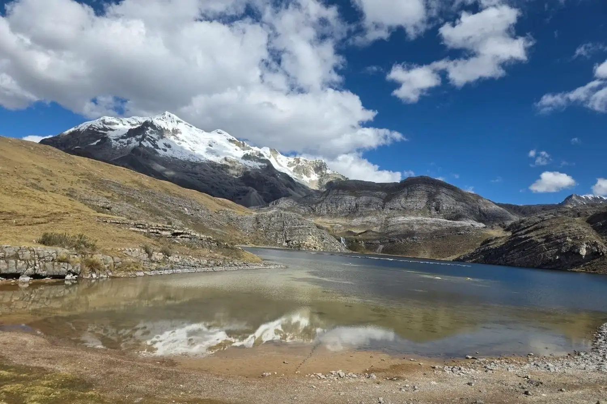
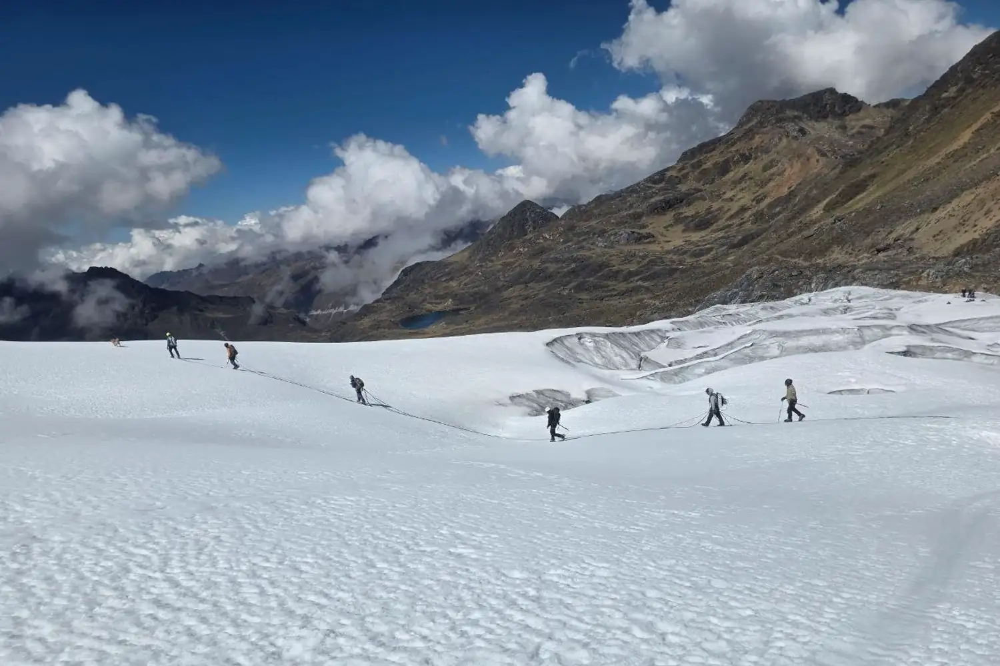
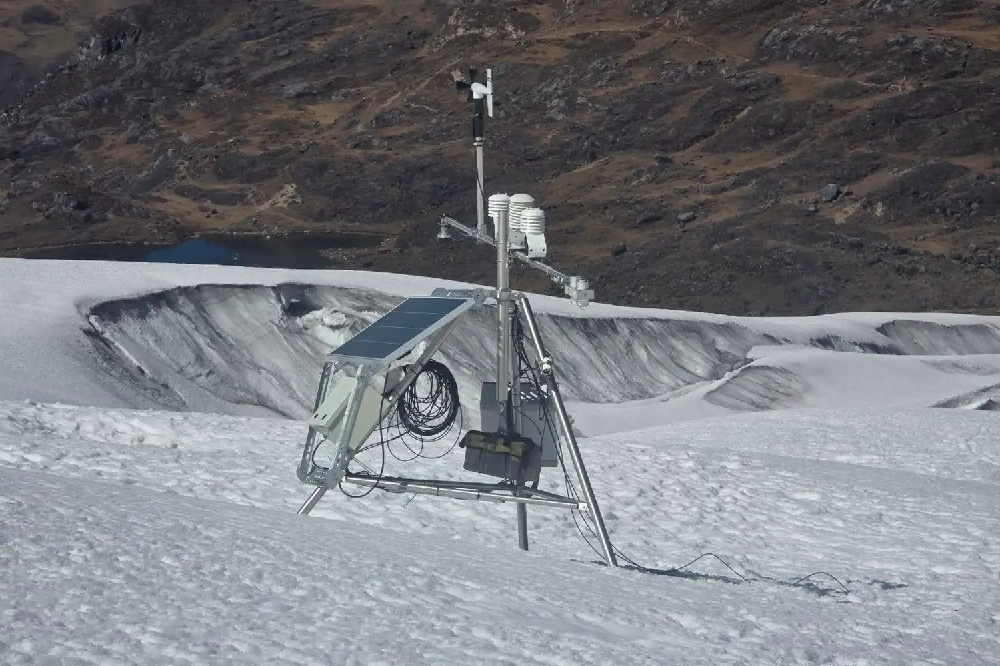
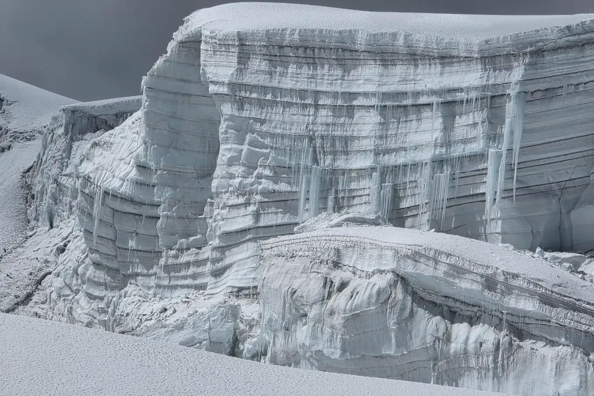
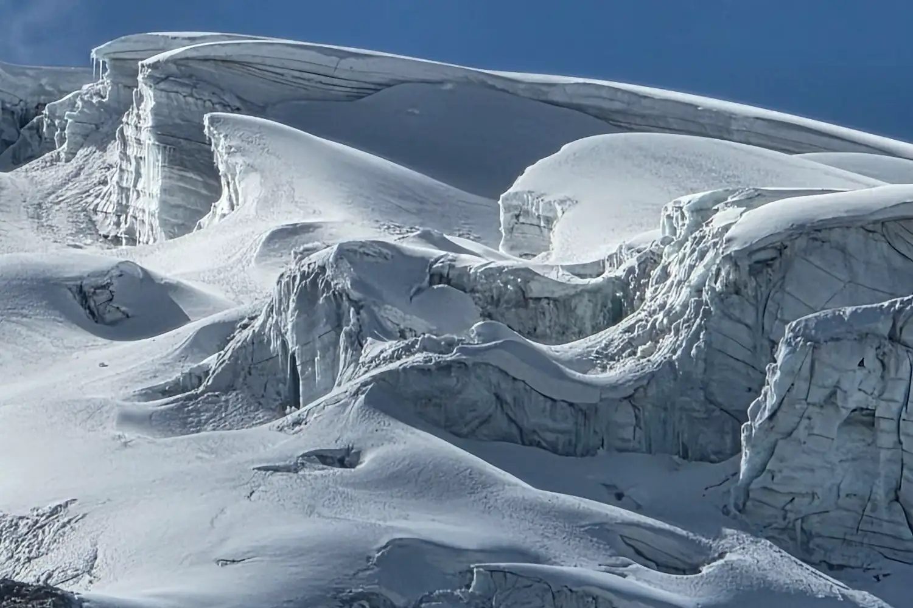
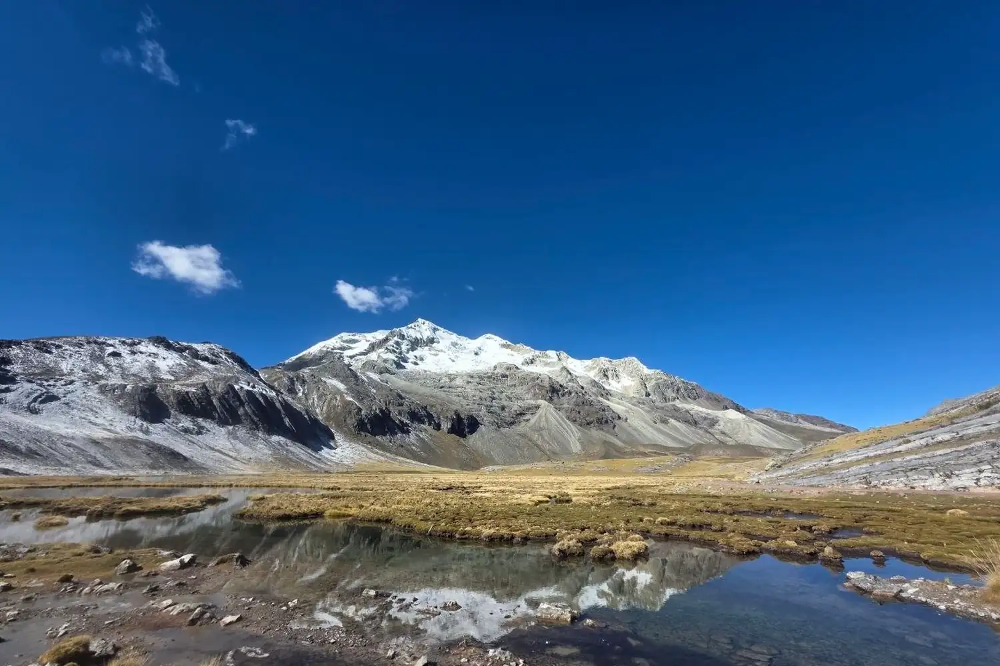
Scientific programme · Peru · 2018–2026
We measure the ice
that remains.
Satellite altimetry, radar, weather stations and black-carbon sampling reveal how Peru’s tropical glaciers are changing —while separating demonstrated results from hypotheses still under evaluation.
Elevation4,700 m Coordinate−13.9000 / −70.9000 SectionAndean puna ArchiveMeteoAndes field campaigns · 2026
Editorial transect assembled from photographs taken during different campaigns. It is not a single geodetic route.
Field traverse and safety control
Automatic weather station
Visible stratigraphy at the ice front
Magnitude and traceability
Key figures
I
Main result · glacier response
Robust regional lowering in Vilcanota
Five independent estimators converge on surface lowering close to 1.5 m per year from 2018 to 2026. Area weighting prevents zones with denser satellite tracks from dominating the regional estimate.
Cordillera Vilcanota · 4,597–6,364 m · ICESat-2 ATL06-SR · 2018–2026
−1.463m yr⁻¹ · 95% CI: −2.357 to −0.596
Primary regional result, equivalent to −1.243 m water equivalent per year using a density of 850 kg m⁻³. This is neither a causal attribution to fires nor a complete mass-balance estimate.
II
Multi-source system
The evidence chain
Each instrument observes a different physical variable. MeteoAndes preserves those distinctions so atmospheric exposure, deposition, energy and geometric response are not treated as interchangeable.
Atmosphere
Exposure
AL30 · AE33 · Sentinel-5P
Absorbing aerosols and transport.
Variable: eBC / aerosol indicators. Campaign unit: ng m⁻³. Status: preliminary.
Meteorology
Transport
AWS · ERA5-Land · CHIRPS
Temperature, wind, cloud and precipitation.
Daily database implemented; the consolidated multi-year climatology remains in preparation.
Deposition
Snow and ice
SP2 · ions · stratigraphy
Particles and tracers preserved in layers.
113 samples inventoried. Final concentrations, blanks and replicates must still be frozen.
Energy
Absorption
Albedo · SW/LW · Rn
Absorbed radiation and potential melt.
Equations and QA/QC implemented; a final surface-energy balance is not yet reported.
Response
Glacier change
ICESat-2 · Sentinel-1
Elevation change and coherent motion.
ICESat-2 consolidated; InSAR remains an advanced diagnostic until cumulative products are closed.
III
Sampling and observation
Five study units across three cordilleras
The network combines the regional Vilcanota glacier ensemble with four cryogeochemical campaign sites. Photographs come from the field archive supplied for this redesign.
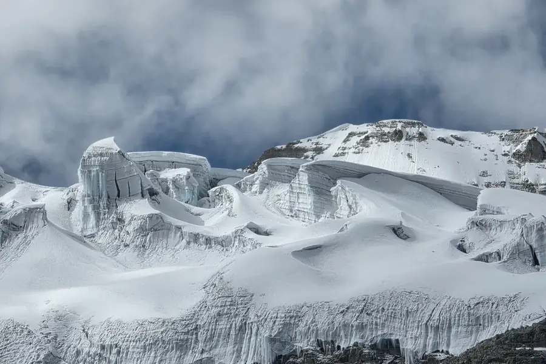
MeteoAndes archive · 2026Cordillera Vilcanota
Regional glacier ensemble
ICESat-2 2018–2026, Sentinel-1 InSAR and hydrometeorology.
MeteoAndes archive · 2026
Cusco · Vilcanota
Quelccaya
Meteorology, AL30 and 48 snow and ice samples.
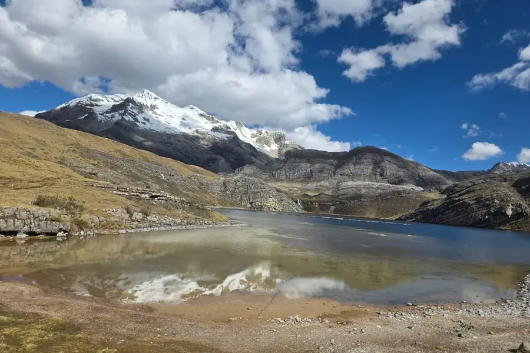
MeteoAndes archive · 2026Junín · Huaytapallana
Huaytapallana / Cochas
Two AL30 sessions, documented AE33 series and 25 samples.
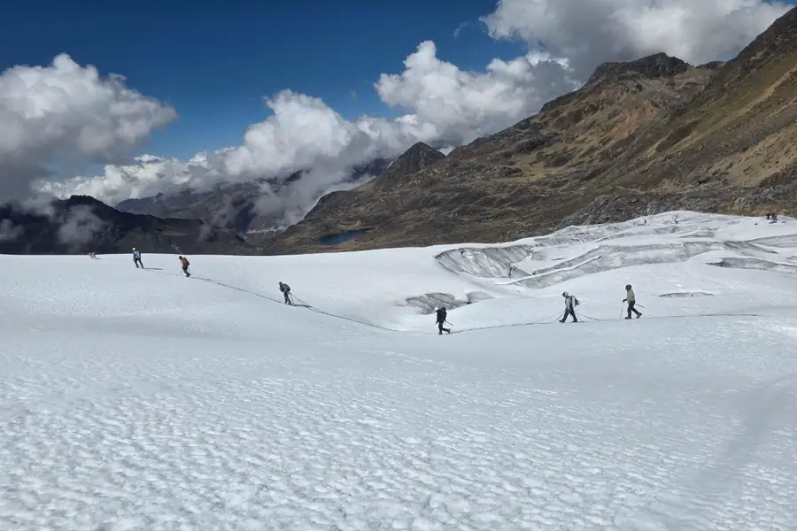
MeteoAndes archive · 2026Junín · Central Andes
Tunshu
21 samples and a high-mountain atmospheric campaign.
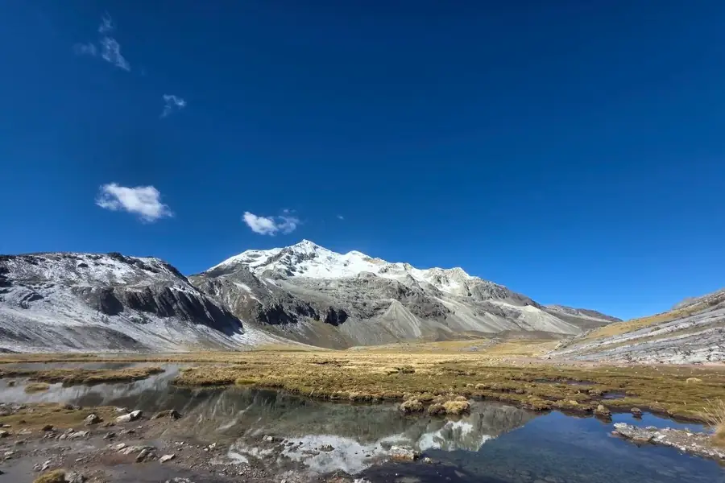
MeteoAndes archive · 2026Áncash · Cordillera Blanca
Mateo / Contrayerba
AL30 elevation gradient and a 19-sample profile from 0 to 95 cm.
No sites match the active filters.
IV
Evidence grammar
Scientific status
Maturity is communicated by line form, not decorative colour. A complete technical architecture does not automatically constitute a causal conclusion.
Consolidated · ICESat-2 VilcanotaDefensible result with explicit uncertainty.
acquisitionQCanalysisvalidationpublication
Diagnostic · Vilcanota InSARGeometry verified; cumulative product and error budget under closure.
acquisitionQCanalysisvalidationpublication
Preliminary · black carbonData available; QA/QC, temporal synchronisation and analytical database remain open.
acquisitionQCanalysisvalidationpublication
Pending · wildfire attributionSentinel-5P and the event catalogue do not yet yield causal evidence.
acquisitionQCanalysisvalidationpublication
V
Energy mechanism
Darkening changes absorbed energy
The comparison is conceptual: the photographs were not taken at the same location or time. The control explores the change in absorption under 600 W m⁻² of incoming shortwave radiation.
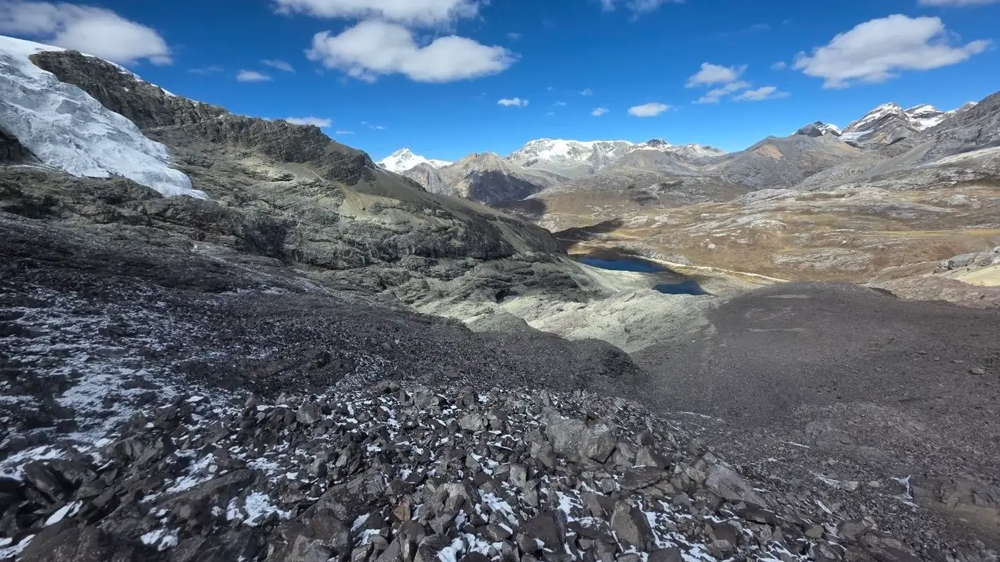
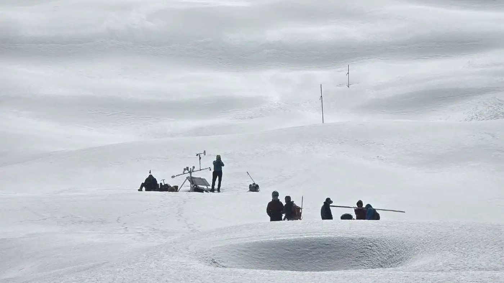
Clean surface · α ≈ 0.80 Darkened surface · α ≈ 0.45
Represented albedo0.63
Absorbed shortwave radiation225 W m⁻²
Additional absorption vs clean snow105 W m⁻²
MeteoAndes archive · 2026 campaignsConceptual comparison, not a controlled photo pairControl: arrows ±5%, Home/End to extremes
VI
Attribution and limits
What MeteoAndes does not claim
Transparency is not a footnote. It is part of the result and prevents technical complexity from being turned into a causal story stronger than the available evidence.
- It does not claim that wildfires caused the ICESat-2 lowering rate.
- It does not treat a high AL30 session as a climatology or as the concentration deposited on the glacier.
- It does not convert monthly InSAR dU directly into dh/dt, mass balance or three-dimensional velocity.
- It does not assign an unequivocal black-carbon source from a single ion or an exploratory correlation.
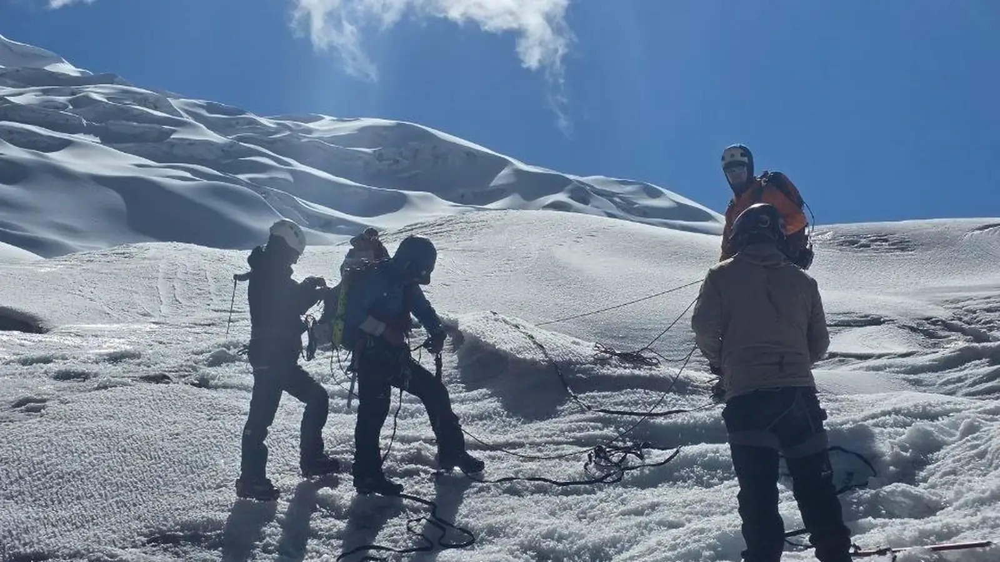
Open science from the Andes · Christian Riveros